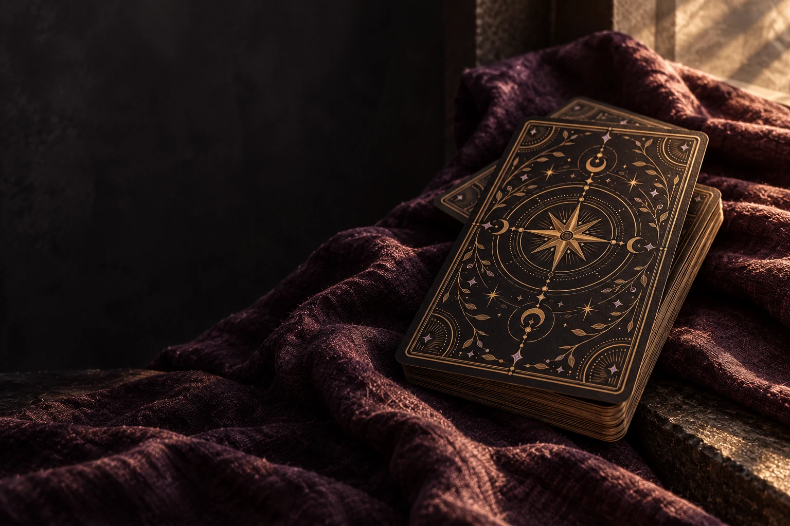

Таро и карта дня
Один образ, вопрос и небольшое действие. Посмотрите на свой день через символы классической колоды Райдер–Уэйт.
Без регистрации. Выбор остаётся в вашем браузере.

Один образ, вопрос и небольшое действие. Посмотрите на свой день через символы классической колоды Райдер–Уэйт.
Без регистрации. Выбор остаётся в вашем браузере.